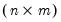
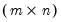

|
|
|
Some functions require that arguments correspond to a highly specific object types. For example, the @eigenvalues function, which computes the eigenvalues of a symmetric matrix, requires a single sym and returns a vector. Similarly, the @wjoin function, which concatenates elements of an svector, requires a single svector argument, and returns a string.For other functions, arguments are valid for a wider range of object types. For example, the single argument of the matrix @transpose command may be a vector, rowvector, or matrix object. In this case the function return type depends on the input type, with a vector returning a rowvector and vice versa, and an  matrix returning a  matrix.Lastly, for some functions, arguments can work with almost all types of input. Some, like the absolute value function @abs, work with any numeric input, including numeric objects, literals and program replacement variables. Other functions, like the string length function @len work with any alphanumeric input, including string vectors, literals and program substitution variables. In these cases, the return type will generally depend on the input type.Consider, for example the @left function which returns theleft-most characters in a string
. The first argument of the function corresponds to an alphanumeric
, and the second argument is a numeric
.
This operation uses the @dateval function to convert the initial string into a date number, the @dateadd function to find the date numbers associated with the initial date number and the following 10 weeks, and the @datestr function to convert the result back into a string.
 and
and  argument types. The command
argument types. The command paired with each of the four values of A for
paired with each of the four values of A for  .
.